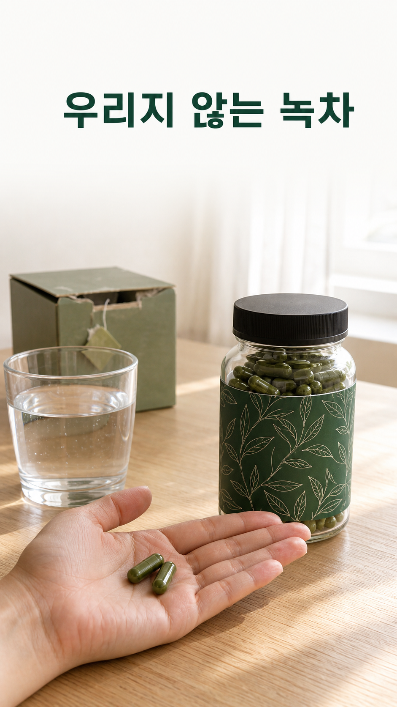
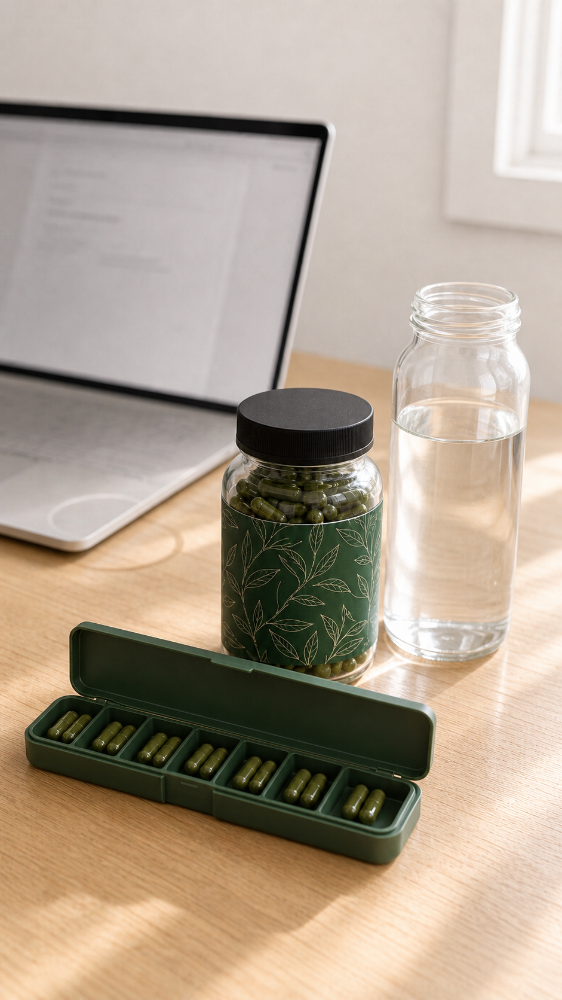
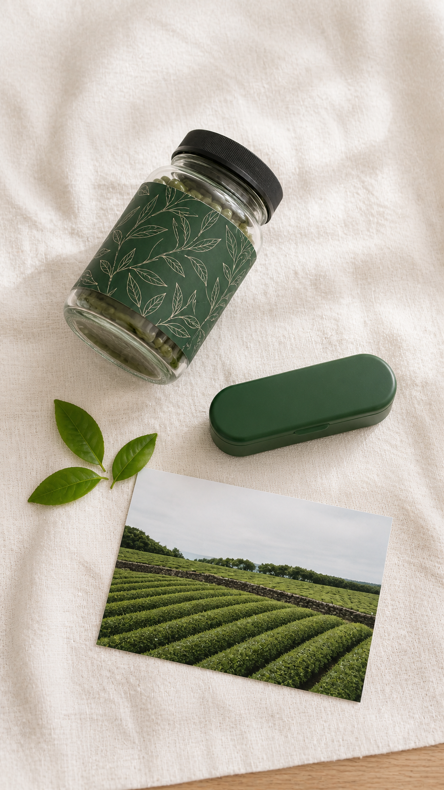
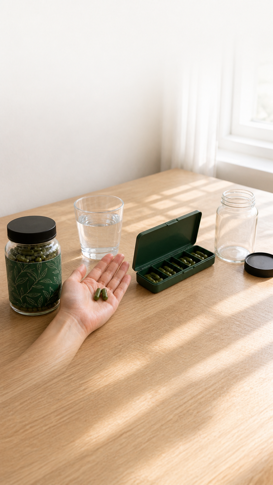

카테킨 캡슐, 녹차 우리기 포기했다면
카테킨을 챙기려고 녹차 티백을 샀는데 하루 한 잔도 못 넘긴 채 서랍에 남아 있지 않나요. 종일 앉아 일하고 저녁은 배달로 끝나는 날이 많다면, 제주 서귀포 유기농 녹차에서 뽑은 카테킨 400 mg을 캡슐 2개로 챙기는 방법이 있습니다. 정가 42,000원, 첫 구매 37,800원.

아침 물 한 잔에 캡슐 2개면 끝
찻잎을 우리고 식히고 컵을 씻는 과정이 사라집니다. 아침 식후 물 한 잔과 함께 캡슐 2개. 1일 섭취량당 카테킨 400 mg이 라벨에 적혀 있어서, 오늘 얼마나 챙겼는지 계산할 필요가 없습니다. 7일 휴대 케이스에 옮겨 두면 출장 중에도 같습니다.
첫 구매가로 시작하기티백도 분말도 아닌 캡슐인 이유
티백은 하루 3잔을 챙기기 어렵고 카테킨이 얼마나 들었는지 알 수 없습니다. 해외 직구 카테킨은 함량 표기가 제각각이고, 녹차 분말은 물에 잘 풀리지 않습니다. 그래서 제주숲은 서귀포 화산토 유기농 다원 3곳의 봄 첫물차 잎에서 녹차추출물을 만들어 500 mg 캡슐에 담고, 1일 섭취량당 카테킨 함량을 400 mg으로 맞췄습니다.
- 제주 서귀포 유기농 인증 다원 3곳 계약, 봄 첫물차 잎 사용
- 1일 섭취량(2캡슐)당 카테킨 400 mg — 고시 범위 안의 함량
- 건강기능식품 인증 제품 — 녹차추출물은 항산화에 도움을 줄 수 있음, 체지방 감소에 도움을 줄 수 있음으로 기능성을 인정받은 원료입니다

결제하면 이런 병이 옵니다
아래는 구성 시안입니다. 60캡슐 병과 7일 휴대 케이스, 제주 다원 엽서가 함께 옵니다.
아침 루틴에 15초만 더하면 됩니다
1. 병을 아침에 물 마시는 자리(정수기 옆, 식탁)에 둡니다. 2. 식후 물 한 잔과 캡슐 2개. 카페인이 약 20 mg 들어 있어 저녁보다는 아침이 맞습니다. 3. 출장이나 여행은 7일 케이스에 옮겨 담습니다. 우리고 식히는 시간이 없으니 첫날부터 그대로 됩니다.

받으시는 것과 순서
1. 먼저 받는 것: 녹차추출물 캡슐 500 mg × 60정(병), 7일 휴대 케이스, 제주 다원 엽서 2. 매일 하는 것: 아침 식후 캡슐 2개 3. 막힐 때: 캡슐이 크게 느껴지면 물을 충분히 드세요. 문의는 스토어 톡톡으로 4. 한 달 뒤: 빈 병. 정기구독은 15% 할인
| 항목 | 내용 | |---|---| | 내용량 | 500 mg × 60캡슐 (30 g) | | 원료 | 녹차추출물 (제주 서귀포 유기농 녹차) | | 지표성분 | 카테킨 400 mg / 1일 섭취량(2캡슐) | | 기능성 | 항산화에 도움을 줄 수 있음, 체지방 감소에 도움을 줄 수 있음 | | 카페인 | 1일 섭취량당 약 20 mg 함유 | | 섭취법 | 1일 1회, 1회 2캡슐, 식후 물과 함께 | | 보관 | 직사광선을 피한 서늘한 곳 | | 인증 | 건강기능식품 |
개봉 후 환불 대신, 샘플팩부터
미개봉 7일 이내는 전액 환불입니다. 캡슐 제품 특성상 개봉 후에는 환불이 어렵습니다. 그래서 60캡슐을 먼저 사는 게 부담이면 10캡슐 샘플팩(2,900원)을 먼저 드셔 보실 수 있습니다. 5일 드셔 보고 캡슐 크기와 냄새가 괜찮으면 그때 한 달분을 고르세요.
섭취 시 주의: 카페인이 함유되어 있어 카페인에 민감한 분은 주의하세요. 임산부·수유부·어린이·질환이 있거나 약을 드시는 분은 전문가와 상담 후 섭취하세요. 이상 사례가 생기면 섭취를 중단하고 전문가와 상담하세요. [자료 필요: 라벨의 섭취 시 주의사항 원문 전체]
FAQ
- 배송은 얼마나 걸리나요? [자료 필요: 실제 배송 정책 — 출고일·택배사]
- 커피와 같이 먹어도 되나요? 카페인이 1일 섭취량당 약 20 mg 들어 있습니다. 하루 카페인 총량을 생각해 조절하세요.
- 저녁에 먹어도 되나요? 카페인 때문에 아침 식후를 권합니다.
첫 구매 10%, 기한은 없습니다
정가 42,000원 → 첫 구매 37,800원. 기한을 정해 두지 않았습니다. 정기구독을 고르면 15% 할인입니다. 서랍 속 티백을 한 번 더 꺼낼지, 캡슐 2개로 바꿀지는 지금 정하시면 됩니다.
첫 구매가로 시작하기